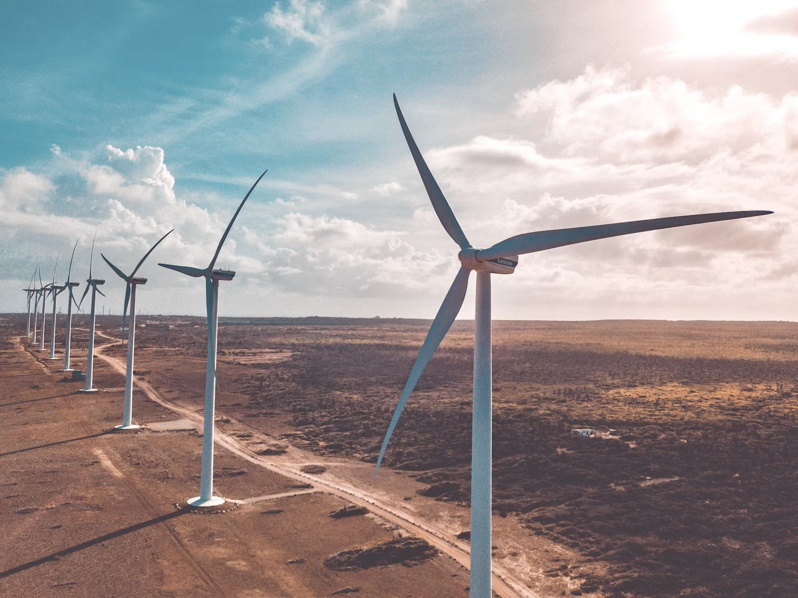
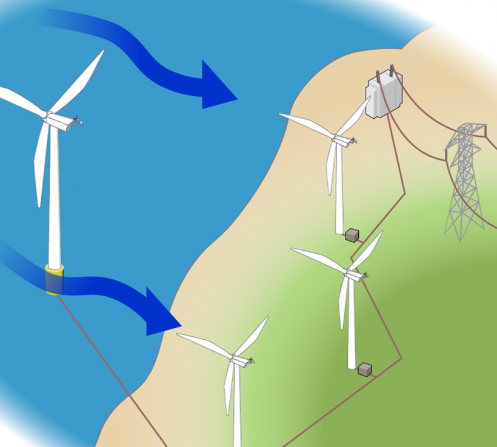

Wind Turbines
Once called windmills, the technology used to harness the power of wind
has advanced significantly over the past ten years, with the United States
increasing its wind power capacity 30% year over year. Wind turbines, as they
are now called, collect and convert the kinetic energy that wind produces
into electricity to help power the grid.
Wind energy is actually a byproduct of the sun. The sun’s uneven heating of the
atmosphere, the earth’s irregular surfaces (mountains and valleys), and the planet's
revolution around the sun all combine to create wind. Since wind is in plentiful
supply, it’s a sustainable resource for as long as the sun’s rays heat the planet.
In addition, because wind power is a growing industry, it’s adding jobs to communities
around the country. Currently, there are utility-scale wind plants in 41 states that have
created more than 100,000 jobs for Americans.
Learn more about the wind industry here, from how a wind turbine works, to the new and
exciting research in the field of wind energy.

This aerial view of a wind turbine plant
shows how a group of wind turbines can make
electricity for the utility grid. The
electricity is sent through
transmission and distribution lines
to homes, businesses, schools, and so
on.
